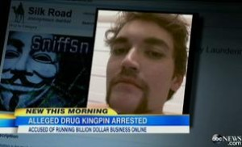

Crypto Currency is becoming black-market money
But wait a minute, what is Cryptocurrency?
For those who are not familiar with this trending term, cryptocurrency is a type of money that exists virtually and has no physical form and it is decentralized. Decentralized simply means it is not owned by any central bank or group. It uses the blockchain technology to track and update transactions and it is also part of the reason why cryptocurrency is considered more secure, because the information cannot be easily altered and your identity is based on a public key and private key, therefore you can remain anonymous. It has a self regulating inflation rate based on supply and demand like the cryptocurrency Bitcoin for example, it halves the amount that can be rewarded or generated every 4 years. This means the amount is finite and since there will never be an excess amount of cryptocurrency the value of the currency would not drop as long as the demand is more than the supply of the currency. Maintaining a scarce supply of cryptocurrency protects its value. On a global scale it is a stable currency that countries with unstable currency value can benefit from, because it is decentralized it would not collapse if that countries government or bank collapse
Here is a video explaining a little bit deeper what cryptocurrency is:
So, it is just a matter of regulating Cryptocurrency, right?
No, it is not that simple. With the advantages of cryptocurrency it threatens the existence of all banks. Users of cryptocurrency can avoid bank transaction fees and have a much more secure and private transaction.Besides being a threat to banks it is also used for illicit transactions. There have also been many crypto currency fraud cases, the most famous one was a ponzi scheme called BitConnect which yielded $733 million. From this we can see there are some issues regarding cryptocurrency that need to be addressed. According to marketwatch.com the concerns of law regulators are with money laundering, terrorist financing, tax evasion and fraud. Currently cryptocurrency is treated as a securities and it is regulated by the securities law framework based on the Securities act of 1933. However, on Decemeber 20, 2018 a new bill was introduced. It was the Token Taxonomy Act and according to bitcoinist.com "if passed, US securities law will no longer apply to virtual currency tokens once their projects become fully functioning networks."
Cryptocurrency is becoming popular amongst organized crime
Forbes posted an article saying a reason this fear exists is because with digital currency each transition is on a blockchain. The data is not directly linked to any names, physical addresses or any other identifying information. This makes digital currencies anonymous in many ways that make it harder for law enforcement because you can’t trace or exactly charge any one person for said transaction
According to this Forbes article which they referenced a 2015 Europol report, “bitcoin was used in over 40% of illicit transactions in the European Union
One example of the use of cryptocurrency on the black market is the famous case of Ross Ulbricht and the Silk Road website
For those who does not know him, Ross Ulbricht was the founder of the Silk Road (a popular website for selling narcotics by the masses) was referred to as a drug kingpin when arrested . His whole Empire all was made through cryptocurrency.
Vice made a documentary about this called “Drugs, Death and the Dark Web” which was aired on bbc. They say that in 2011 when the website kicked off it was referred to as the “amazon of illegal drugs and then became such an issue that not only the FBI, and DEA, had to get involved, but since it was such a big organization the secret service had to eventually participate as well. Ross Ulbrich’s enterprise in the end was actually brought down by an you tax inspector of all people.
But how cryptocurrency can affect the economic future?
To quote a man wearing a bitcoin costume that I saw on Last Week Tonight with John Oliver : “it’s a virtual currency worldwide you can send for little to no fees. It’s open source and not controlled by any government or corporation or individual.. it’s financial freedom bro”
Basically, cryptocurrency is essentially gives anyone the power to develop their own form of currency and thus making it like a digital gold rush of sorts.
A good pointohn Oliver made is that it’s an investment because everyone unanimously decided it has value so essentially that value can get over inflated very easily.
I thought the beanie baby was a good example. Why is it that a simple beanie baby can be sold on etsy for $5,000 like this one… simply because we say so. When as john oliver literally did, you can buy the exact same one for $20.